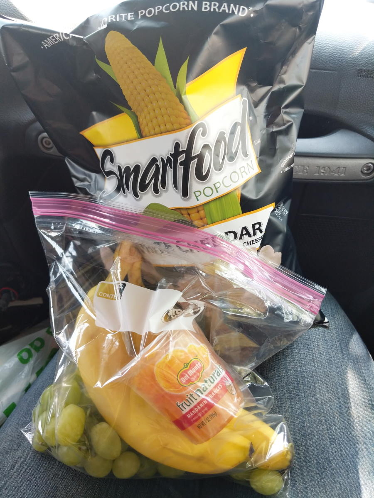
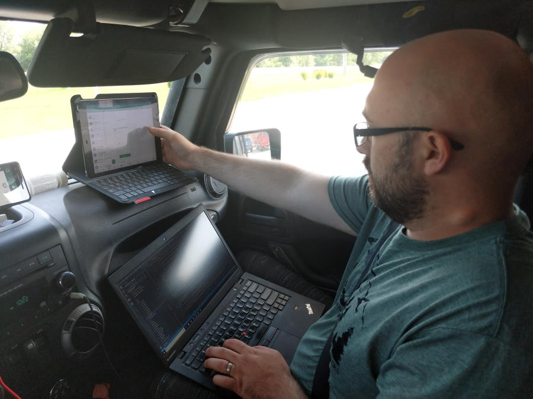
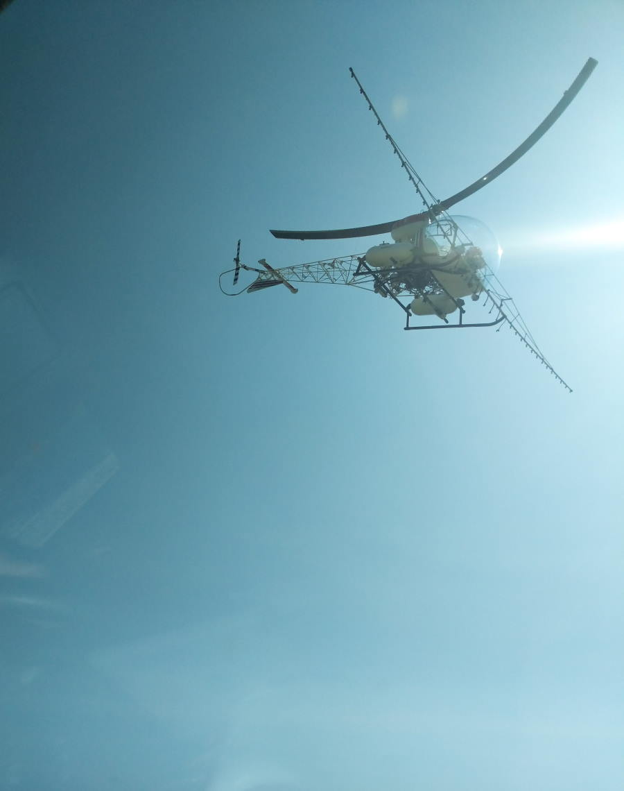
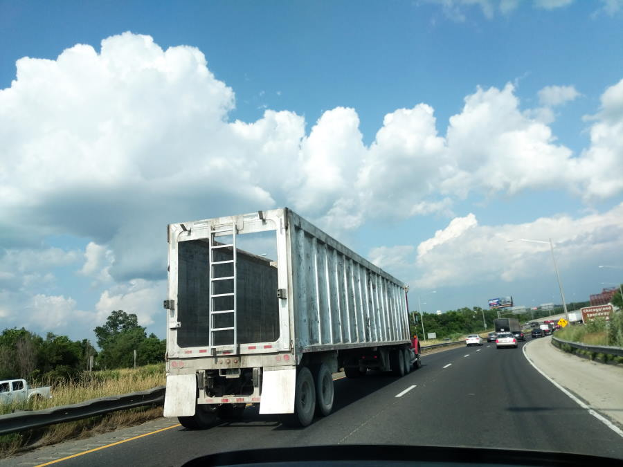
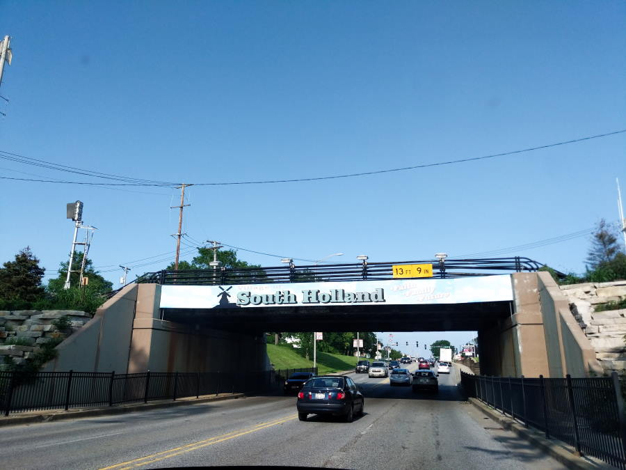
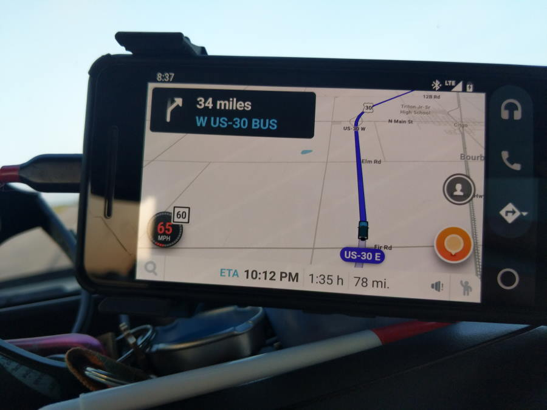
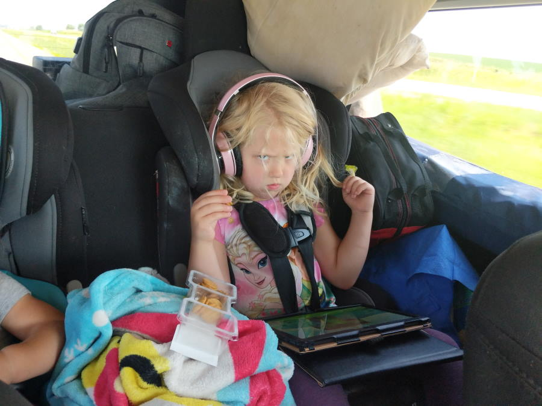
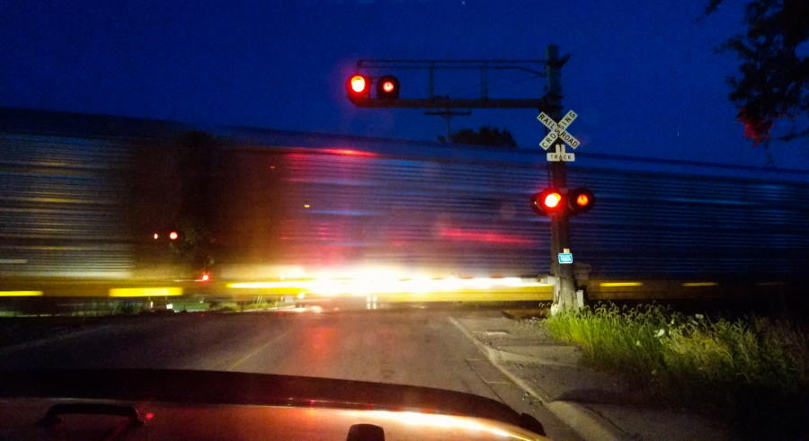

Gas Station Breakfast turns ugly
On the morning of Day 2, Abigail made breakfast and I made a batch of coffee on the French Press. Now we are on the morning of Day 10, we have gotten used to getting a cheap breakfast sandwhich and coffee when we do the morning gas run. So far we have been lucky and not gotten sick from the gas station food. Today was not the case. We had to pull over at 9:50 for Abigail to Puke, and I made many stops at rest stops. The girls ate much healthier then us and except for a marshmellow induced puke from Jenna haven't gotten sick much.
 The girls eat better then we doAfter Abigail threw up, she took a turn driving. She said she felt better, and I had to work on the blog.
 I'm a slave to my audienceWhen we got to the Cedar Rapids area, Abigail was white knuckle driving through this area. There was heavy construction, the roads were in poor shape, and tractor trailers were passing kind of close to the Jeep.
Illinois Driving
In an earlier post I talked about the bad driving in Ohio, now let me talk about some of the driving incidents we saw in Illinois.
In general its been windy, and when your in a Jeep Wrangler you feel it. When you add a roof top tent, and a cargo shelf weighing the back down its like driving a refrigerator box in a wind tunnel. Its bad. Its even worse when tractor trailers go flying by on both sides causing the wind to hit you in all directions. Fortunatley we weren't involved in any car accidents and so far our front windshield remains unbroken.
We got buzzed by a crop dusting helicopter, he was taking care of the fields on either side of us but he hovered a few feet above the Jeep. Checking out the Roof Top Tent? I like to think so.
 He was making some pretty sharp turns around the fields.At one point we were being pelted with something from a tractor trailer infront of us. We were a couple car lenghts back, and little chunks of something kept hitting us. Abigail thought it was rocks, but I proudly exclaimed, "He's blowing corn chunks out of his ass, I hate corn!". I was tired, this was around 3PM, we had been on the road since 6am.
We didn't get a picture of the truck because we were too busy laughing. See below for another tractor-trailer that puzzled me for a few minutes.
 This isn't the truck who was blowing corn, but it took me a good 15 minutes to figure ot where his door was.We continued through Illinois, eventually coming near Chicago. At one point Jenna had asked Abigail for some more Smart-Food Popcorn. Abigail was looking around the Jeep for a container, then decided to take a break and eat some popcorn before being yelled at my Jenna that she wanted popcorn. It was very funny in the moment, and I couldn't stop laughing. What made the whole thing worse is we were going through another heavy construction zone. Ok, maybe you had to be there and maybe being in the vehicle for hours and hours made it seem funnier then it actually was.
Later on the same highway, we had a SUV merge into a RV camper. The SUV lost their drivers side mirror, but nothing major. Glad we weren't involved in any bad merges yet!
GPS & Tolls
I usually have my GPS set to Tolls. Today we probably added another hour to our drive time because I wanted to avoid a $00.55 toll. It took us through Markham & South Holland. Some of these areas were kind of busy and in some places sketchy, but we made it through Okay! After this I removed the Toll restriction from my GPS.
 South HollandIt was getting late, and the campsite we picked was further away then we had thought. We changed time zones, and our ETA for camp was 10:30PM. We were aiming for 720 miles today, from Iowa to Indiana. We were getting loopy and everyone was getting cranky.
 In my defense, before the time change it said 9:25  Jenna's angry faceWe eventually pulled into campa after being stuck at a train crossing, and quickly setup camp. We all fell asleep shortly after laying down in the tent.
Would we be going home tomorrow? I was hoping to push through to NH.
 We apparently like to camp around train crossings